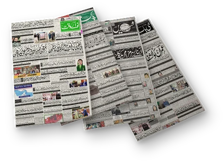
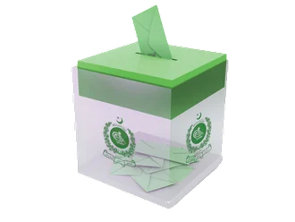
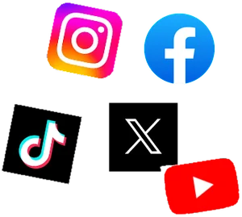
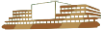
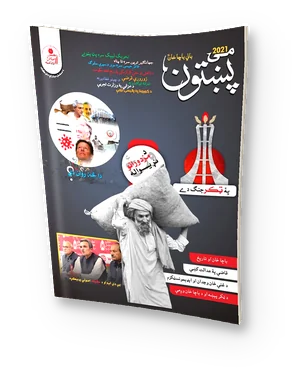
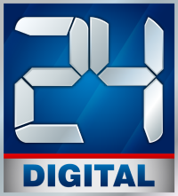
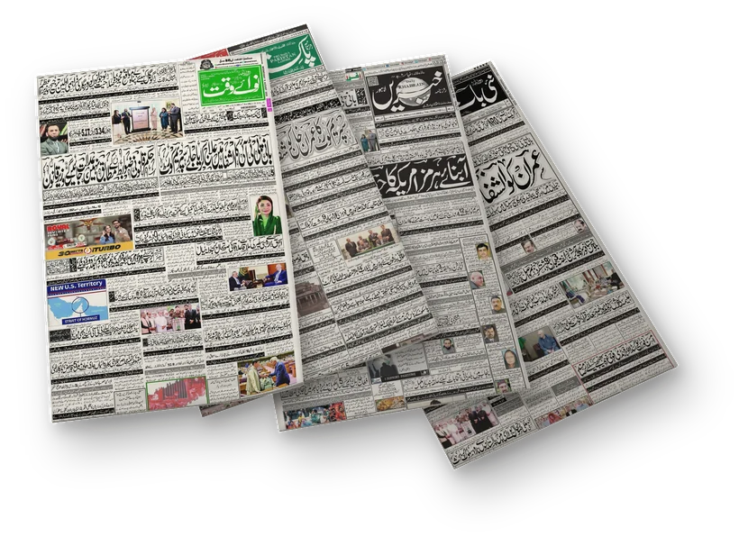
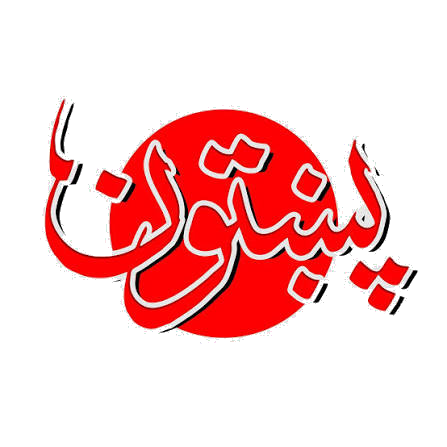

We measure Pakistan's information system and trace how power moves through it.

Newspapers
Voting Records
Social media
Parliament
Books · MagazinesPakistan must study itself to move forward.
Study its institutions, its society and its state;
then recognize their failures, realize their responsibilities, and construct ideals.
Our works
The media landscape of Pakistan
We are studying 2 years of broadcast from the ten most watched news channels to uncover what they cover, how they frame it, and who they support.
Are all the channels saying the same thing? Who do they blame when things go bad? Do they follow their owner's politics?

02PublishedDaily Akhbar
Every morning we capture the front page of every Pakistani newspaper we can reach: 45 papers, from 12 cities, in five languages.
What is the whole country being told to look at today? do the Urdu papers and the English papers lead with the same story?
Use these front pages to ask your questions.

03In Progressپښتون (Pakhtoon)
The magazine of Bacha Khan's movement, printed in Peshawar and once banned by the British.
We archive 111 issues, 1928 to 1960, in Pashto with English beside it.
It tells many stories and lives of Pashtun within the anti-colonial movement. Use the dashboard to explore the magazines.

04WaitingSocial media discourse
Social media has lowered the barrier for political participation and getting informed. This also means almost anything can be said by anyone and an algorithm decides what you get to see.
What are 60 million Pakistanis talking about there? What content gets the most attention? Is the algorithmic pushing radical and extermist views?
We are waiting for research approval from Meta.

Come join us; be a part of the collective.
join us